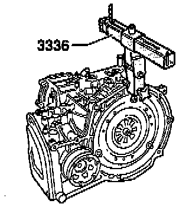

Transporting Transmission

Special tool 3336 may be used to transport the automatic transmission and also when setting up transmission support 3282.
- Secure special tool 3336 to transmission housing flange.
- Position pins so that 8 holes are visible in chain direction.